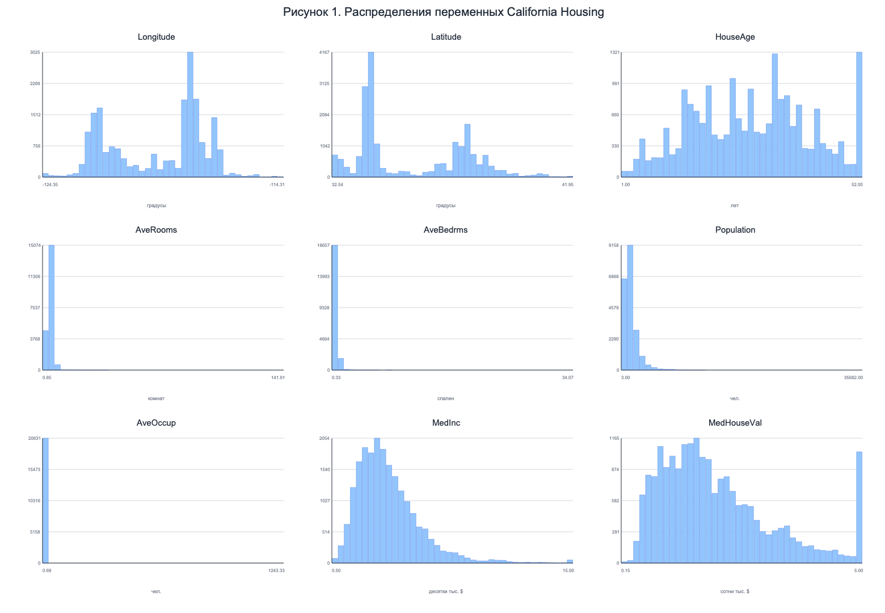
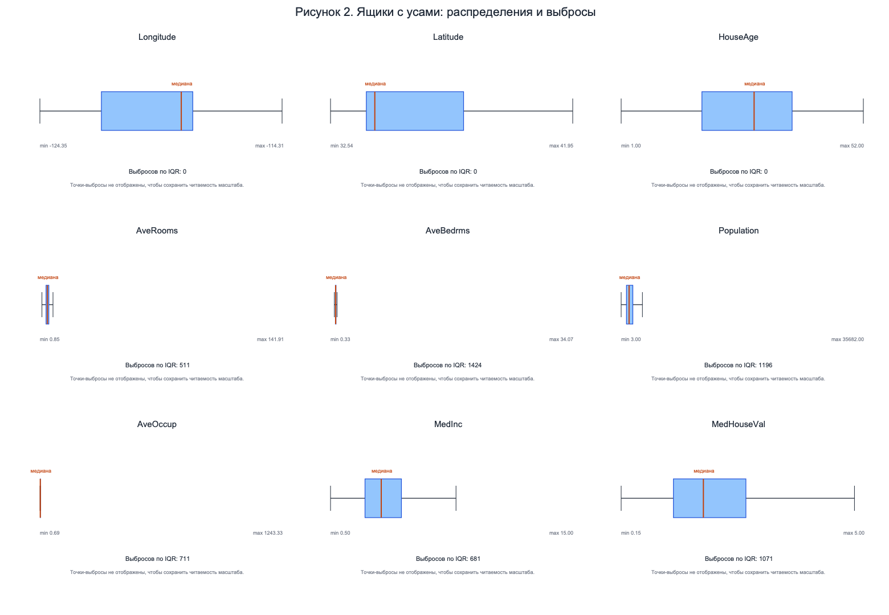
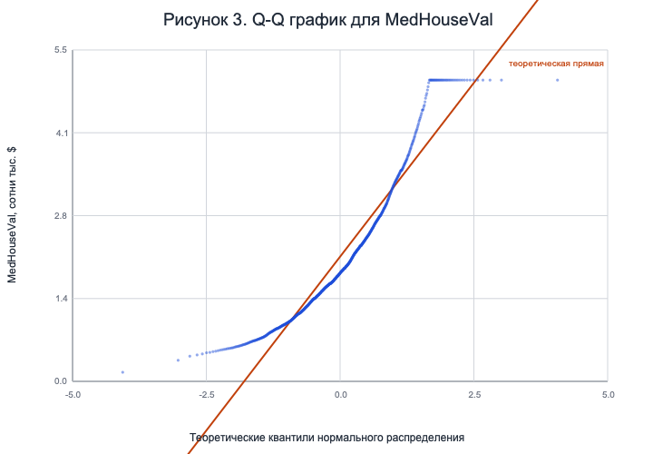
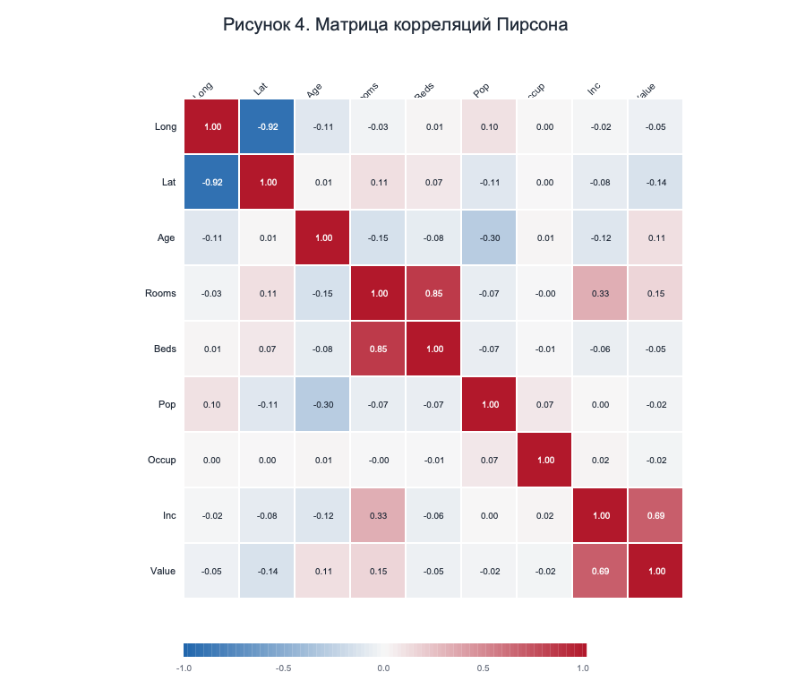
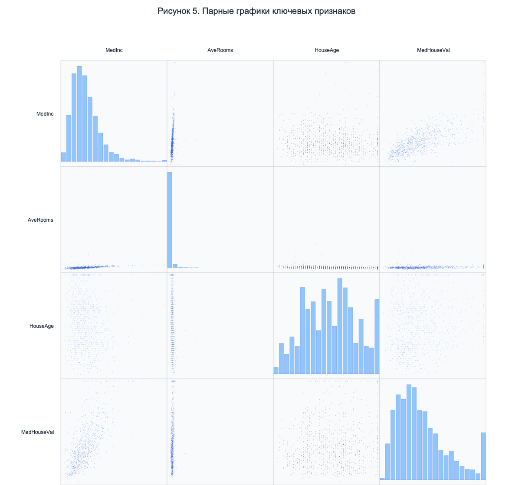
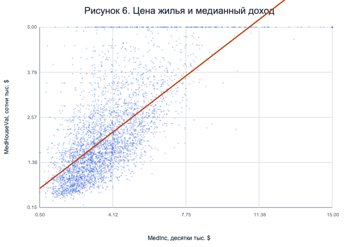
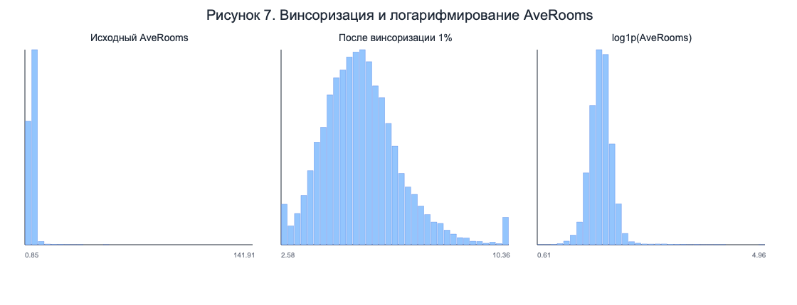

Освоить методы первичного исследования и визуализации данных с использованием Python для последующего построения аналитических моделей.
Проанализирован датасет California Housing, включающий 20 640 районов Калифорнии по данным переписи 1990 года. В нём восемь признаков и целевая переменная MedHouseVal. Все значения числовые. Пропусков не выявлено.
| Переменная | Среднее | Медиана | Ст. откл. | Диапазон: мин. — макс. |
|---|---|---|---|---|
| Longitude | -119.570 | -118.490 | 2.004 | -124.350 — -114.310 |
| Latitude | 35.632 | 34.260 | 2.136 | 32.540 — 41.950 |
| HouseAge | 28.639 | 29.000 | 12.586 | 1.000 — 52.000 |
| AveRooms | 5.429 | 5.229 | 2.474 | 0.846 — 141.909 |
| AveBedrms | 1.097 | 1.049 | 0.474 | 0.333 — 34.067 |
| Population | 1425.477 | 1166.000 | 1132.462 | 3.000 — 35682.000 |
| AveOccup | 3.071 | 2.818 | 10.386 | 0.692 — 1243.333 |
| MedInc | 3.871 | 3.535 | 1.900 | 0.500 — 15.000 |
| MedHouseVal | 2.069 | 1.797 | 1.154 | 0.150 — 5.000 |
Таблица 2. Квартили и форма распределений.
| Переменная | Q1 | Q3 | Асимметрия | Эксцесс |
|---|---|---|---|---|
| Longitude | -121.800 | -118.010 | -0.298 | -1.330 |
| Latitude | 33.930 | 37.710 | 0.466 | -1.118 |
| HouseAge | 18.000 | 37.000 | 0.060 | -0.801 |
| AveRooms | 4.441 | 6.052 | 20.696 | 879.140 |
| AveBedrms | 1.006 | 1.100 | 31.315 | 1636.315 |
| Population | 787.000 | 1725.000 | 4.935 | 73.535 |
| AveOccup | 2.430 | 3.282 | 97.632 | 10648.430 |
| MedInc | 2.563 | 4.743 | 1.647 | 4.951 |
| MedHouseVal | 1.196 | 2.647 | 0.978 | 0.328 |
Среднее и медиана заметно различаются у ряда признаков, а положительная асимметрия у AveRooms, AveBedrms, Population и AveOccup показывает наличие длинных правых хвостов.



Наиболее сильная линейная связь с целевой переменной обнаружена у медианного дохода: r = 0.688. Связи цены с широтой и долготой равны соответственно -0.144 и -0.046, поэтому координаты содержат полезную пространственную информацию. Между средним числом комнат и спален корреляция высокая: r = 0.848; это потенциальная мультиколлинеарность для линейной модели.



Для AveRooms метод IQR дал 511 выбросов при границах [2.023; 8.470], а Z-метод с порогом |z| > 3 — 133 выбросов. Эти наблюдения не удалялись автоматически, поскольку они могут соответствовать реальным, редким районам. Для иллюстрации использованы винсоризация по 1 % с каждого края и преобразование log1p.

Полный воспроизводимый код и выполненные ячейки приведены в файле Отчет_ПЗ5_Разведочный_анализ_данных.ipynb. Для воспроизведения исходный датасет загружается функцией fetch_california_housing из scikit-learn.